Lateral chromatic aberration is corrected properly from the center of the field all the way to the peripheral edge.
There are no changes in color at field stops of eyepiece,
allowing 100% effective field viewing (in the conventional system, there are red tinges inside of the stops).
When a graticule is inserted into the eyepiece, there are no color changes around the graduated scale or numbers.
Longitudinal chromatic aberration is improved for the objective lens and eyepiece.
Both the objective lens and eyepiece are their own complete optical systems and can be applied to any field.
The Abbe compensation method was adopted because it was difficult to correct lateral chromatic aberration,
particularly for high magnification objective lenses. This was resolved by dividing the objective lenses into front and rear
groups and over-correcting the front group, then inversely correcting the rear group.
Page 3 of Nikon New CF LENSES clarifies that CF means "chromatic-aberation-free".
Differences among CF/CF N Plan Apochomat, CF/CF N Plan Achromat, and other CF objectives are on pp 11-13.
Nikon's CF OBJECTIVES 210mm TUBE LENGTH catalog describes those objections without addressing CF.
eBay item number: 185534491790
Condition: For parts or not working Seller Notes:
In use and was removed from a research facility after company was acquired several years ago.
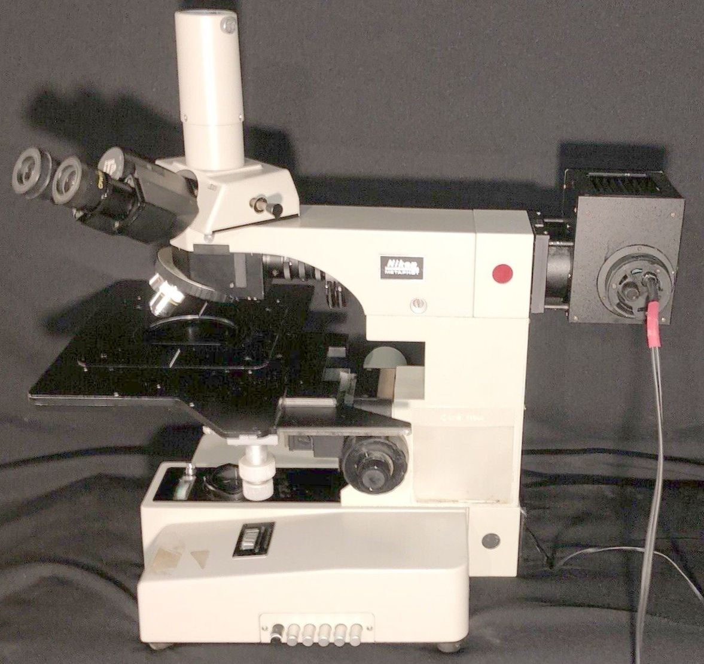
Optics and mechanicals are in good condition.
Solid smooth operation.
Below + above illumination features.
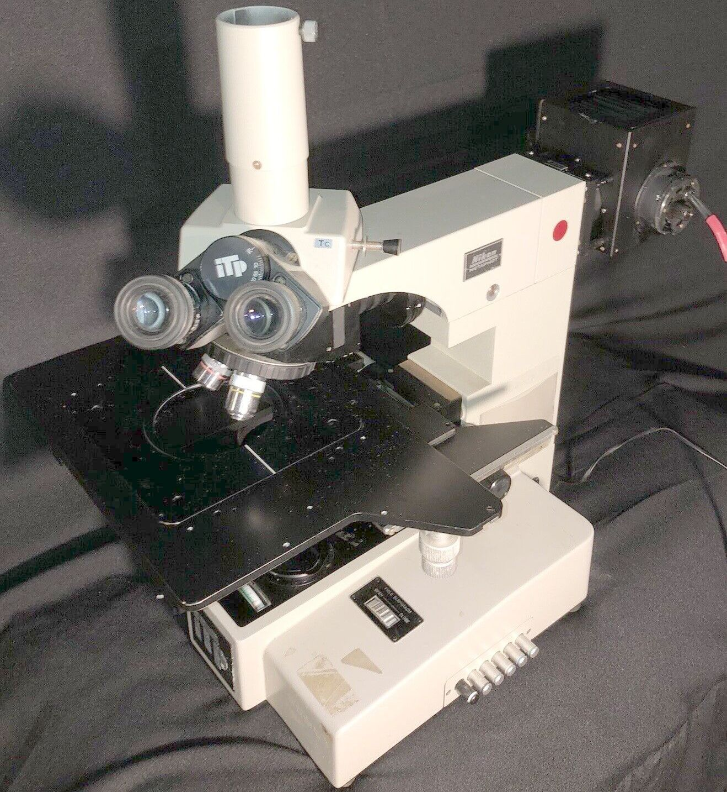
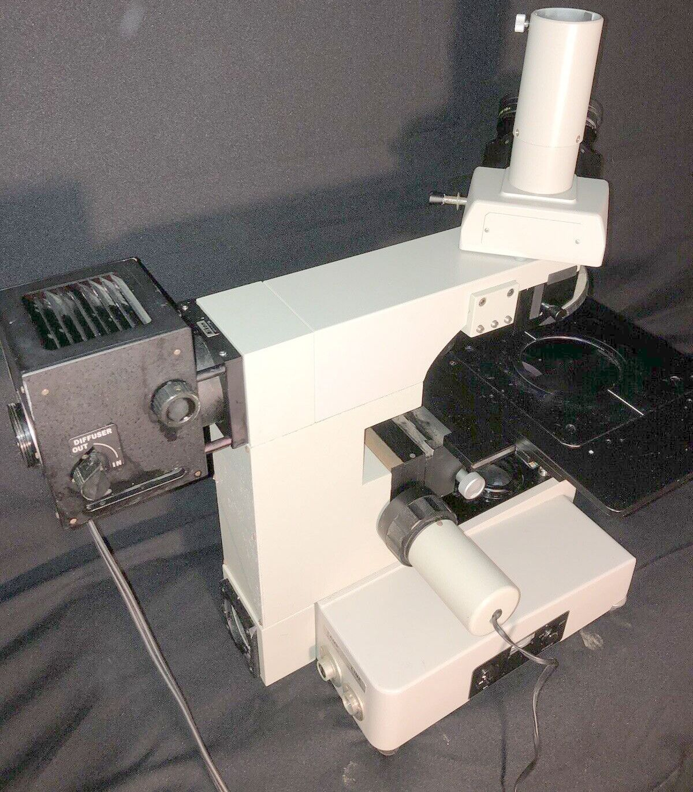
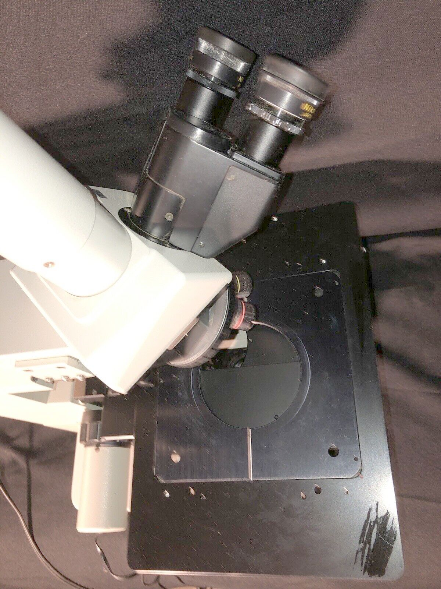
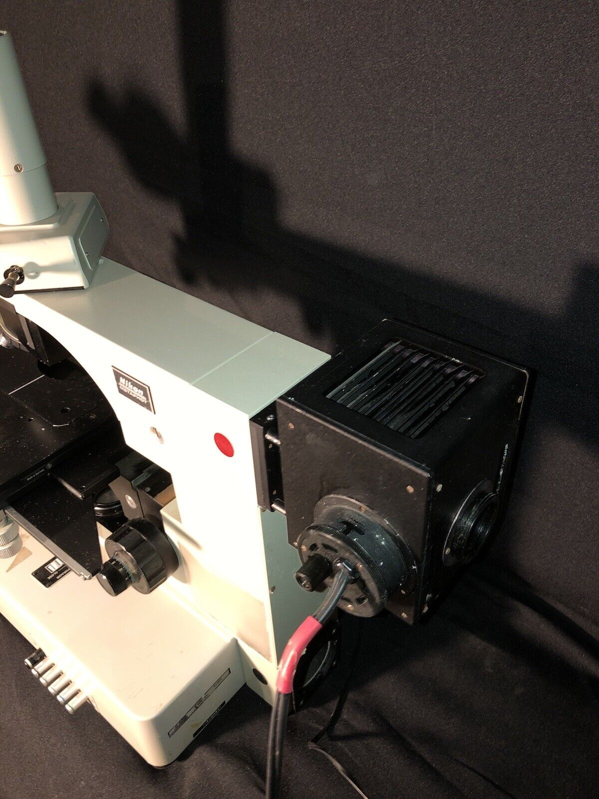
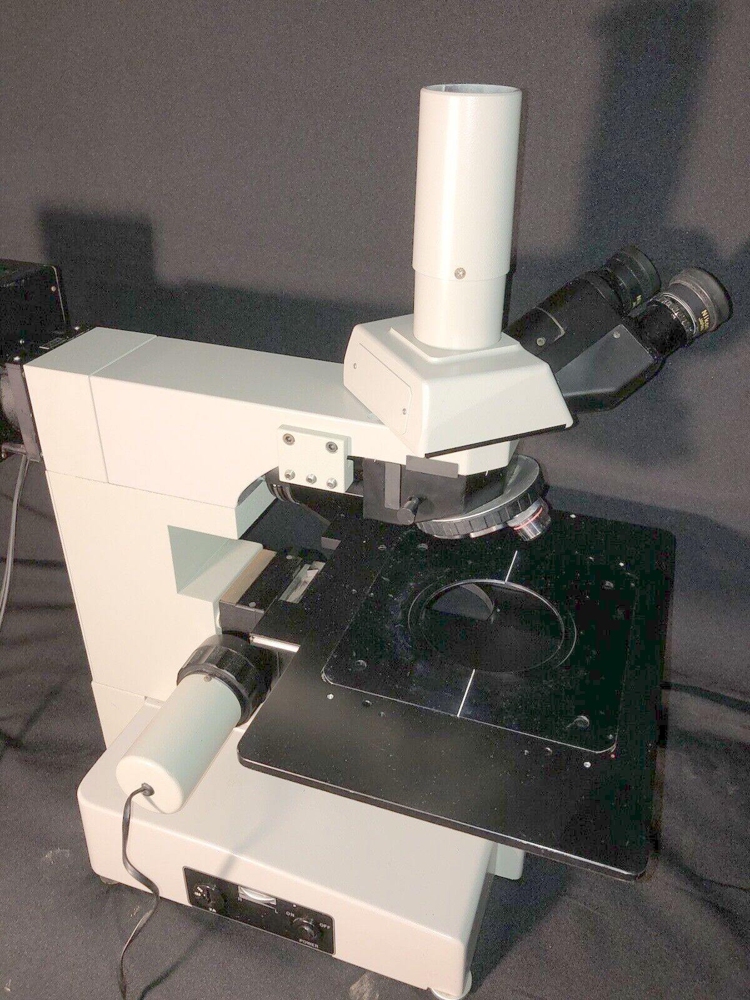
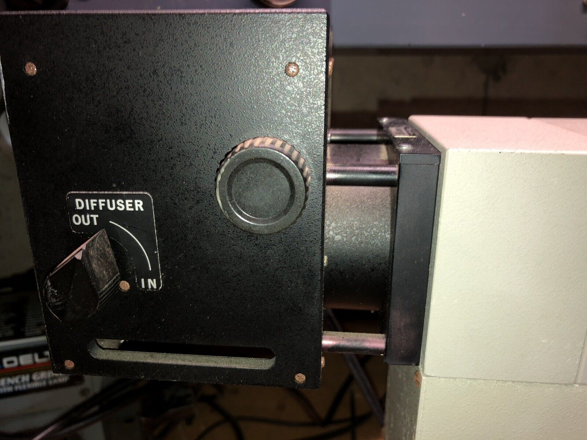
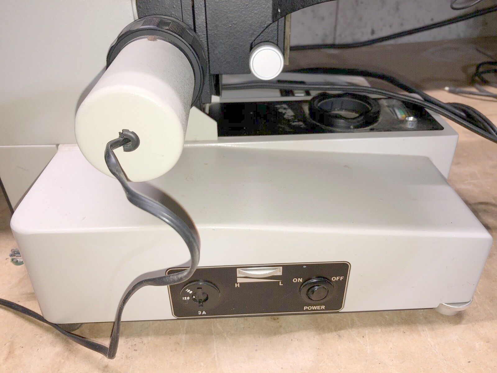
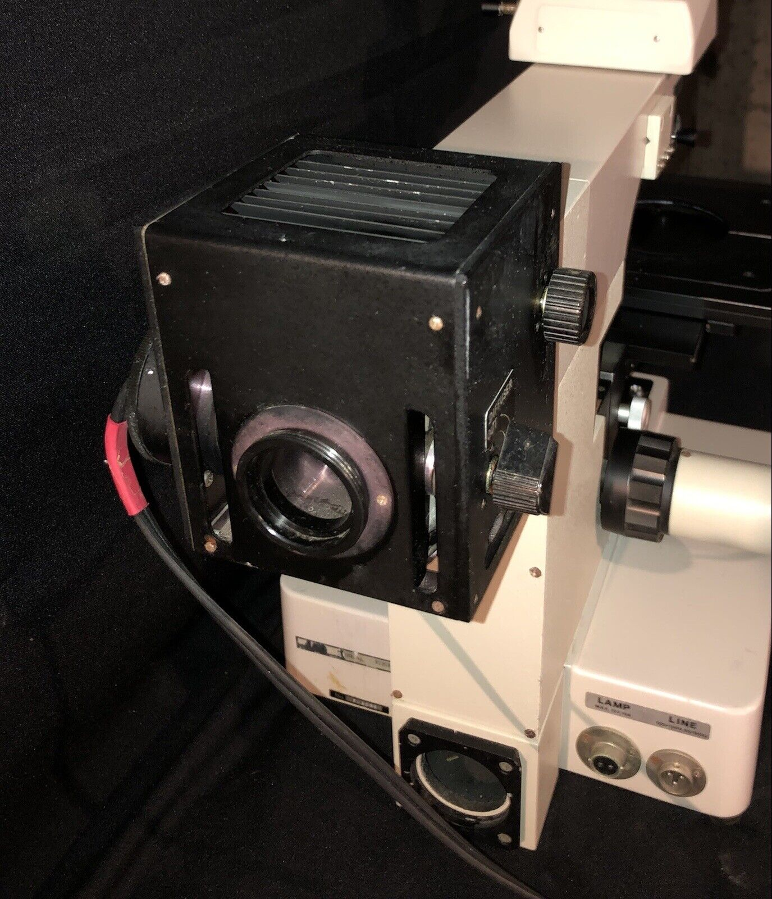
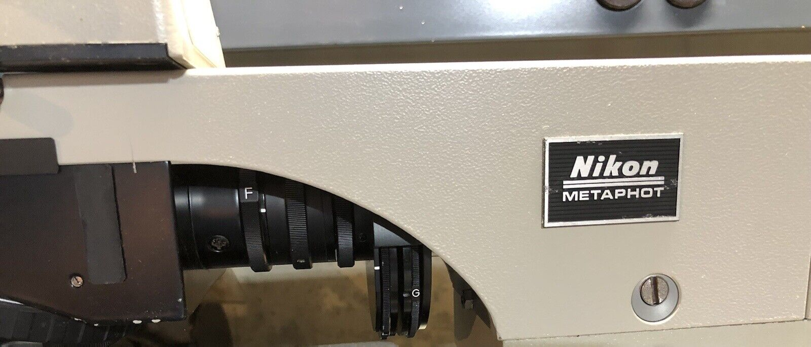
A slider seen in illumination path on another Metaphot:
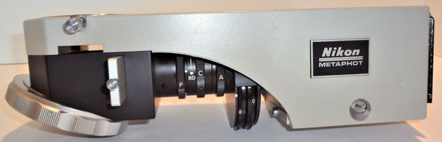
...perhaps is for fluorescent/UV illumination: 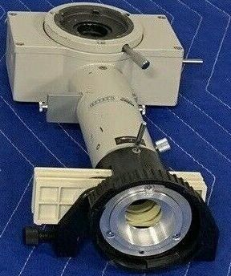
That focus motor seems familiar from other microscope images, but is probably from ITP, not Nikon. MicrobeHunter.com: Nikon stage focus motor? seeking information
Metaphot for DIC had substantially different illuminator:
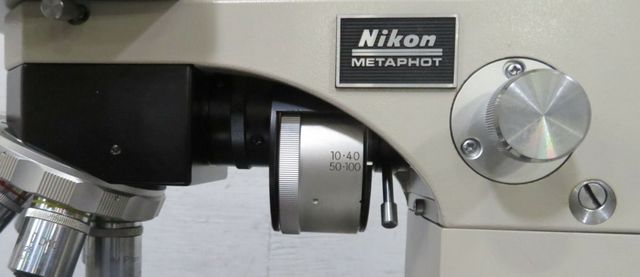
FCR halogen replacement lamp: 100W 12V T3 GY6.35 base, 3K Lumens, 3200 K
C thumbwheel between F and A on vertical illuminator may be for Field aperture centering. received 23 Aug
generic 160mm 10/20/40 objectives switched for 210mm M plan objects
vertical illuminator C thumbwheel was frozen
trinocular slider is frozen
(large) stage weirdly disassembled, a dovetail strip is missing.
lamp house diffuser lever was extremely stiff.
condenser focus is frozen
condenser carrier missing (not shown eBay images)
Labophot condenser carrier liable to be repurposed...
Focus motor is only 2-wire; not a stepper, probably DC for power assist.
The base seems unmolested:
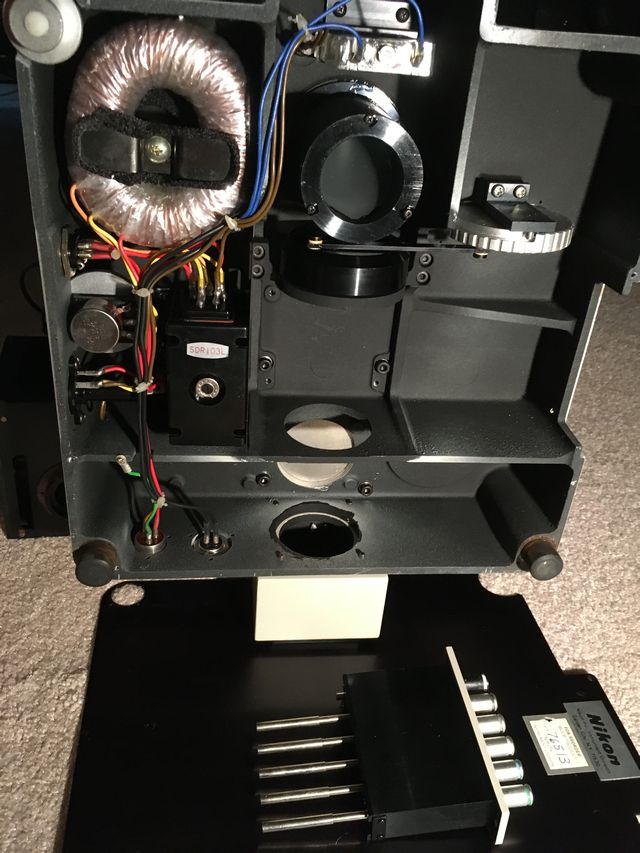
The only optics are mirror and field aperture; filter push-buttons have neither filters nor filter holders.
No fuse is evident in wiring; nearly all electronics, except for a variable resister, meter, lamp,
toroidal power transformer and power resister, are in a black plastic module.
That module may use an SCR instead of power transistor.
The field lens provides for a 48mm o.d. polarizing filter.
A nominal 55mm camera filter has 57mm o.d.; 46mm camera filter should work.
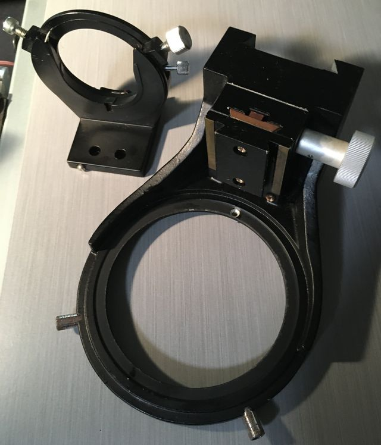
Base of Metaphot stage carrier dovetail is about 111mm to field lens centerline
and 60mm to face of condenser carrier dovetail.
Labophot condenser fork center to vertical plate back is 48mm;
need about 3mm shim, e.g. 1/8 aluminum to match 111mm..
That 1/8 aluminum spacer can be drilled for Labophot condenser fork back plate 4 holes
and Metaphotcondenser focus rack dovetail 2 holes.
FWIW, Optiphot is 111mm both at field lens and condenser lens centers. Type Tc trincular head will be modified for direct projection.